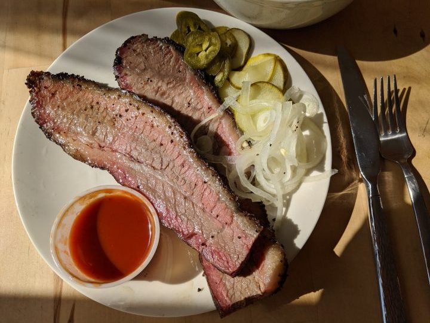
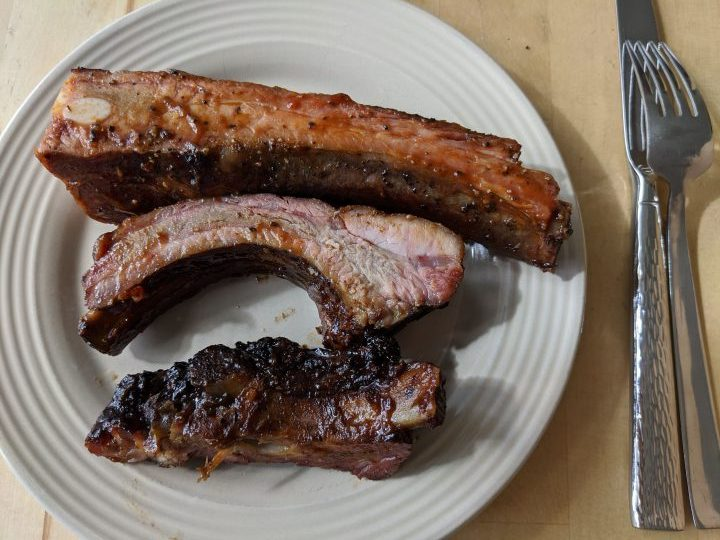

おいしいカナダ料理、スモークミートを宅配で堪能～CHERRY STREET BAR-B-QUE～
モントリオールの老舗のデリ、 Schwartz's Deliの元祖スモークミートは有名で、店の前にはいつも列ができているほどの人気店。
アメリカでもスモークミートは食べられるが、カナダではブリスケット（肩ばらの一部）、アメリカではナーベル（トモバラの一部）というふうに、使われる牛肉の部位に違いがある。
スモークミートの作り方は、Schwartz's Deliでは、ブリスケットを12時間スパイスで漬け、10~12時間燻製し、その後3時間蒸す、といった、家庭では絶対真似できない方法で料理される。
モントリオールで覚えたスモークミートの味、自分では作れないけど、また食べたい。こんなときこそUBER EATSのお世話になる。
私のお気に入りでリピ―トしている店はCHERRY STREET BAR-B-QUE。我が家からは結構遠いので宅配で気軽に食べられるのはありがたいかぎり。
↓ スモークミート Beef Brisket

口にいれるととろけるような柔らかさ。添えてあるピクルスとの相性も抜群。ハラペーニョは激辛注意。
↓豚のスペアリブ Pork Spare Ribs

むしゃむしゃと豪快にかぶりつく。
甘辛のソースにスモークされた風味がおいしいく、今日もまたつい食べ過ぎてしまう。